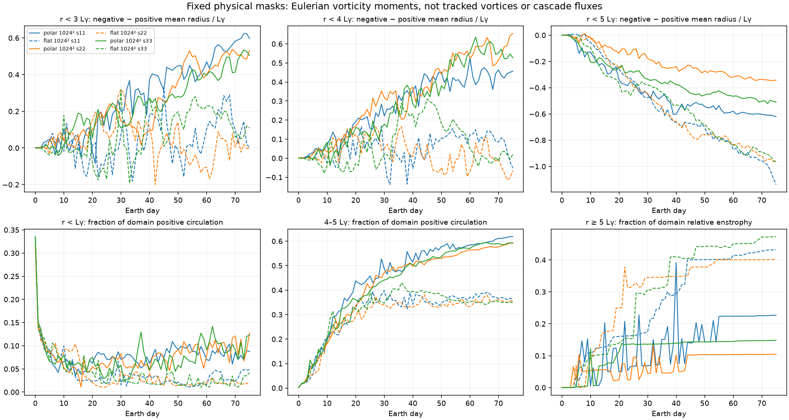

Three-depth convection experiments in an idealized hydrogen–helium atmosphere, alongside a separate two-dimensional polar-flow reference. Play the matched movies to compare their evolution.
Published November 14 · completed runs · all computation on Unity
Long runs and the heating control.
Three completed movies, with synchronized vorticity and passive-tracer concentration at 19.69, 59.06 and 100.31 km above the bottom. All times below are Earth days. The wider 35°N channel remains a separate, ongoing experiment.
The original 100-day experiment and its checkpoint continuation, joined into one movie. Top row: vorticity ζ/f₀. Bottom row: passive-tracer concentration C. Three columns show the three heights. The tracer contrast makes weak late-time gradients visible while retaining absolute concentration.
Every three-hourly output; 12 frames/s. Vorticity: fixed symmetric asinh scale at each depth, width 0.1 in ζ/f₀, spanning the full extrema over 300 days. Positive vorticity is cyclonic in the northern hemisphere. Tracer: BrBG, two-sided asinh centered at C=0.0793082, width 0.001, full range 0–1, fixed across all times and depths. No framewise normalization, field clipping or temporal interpolation. Poster: day 300.
Computed on Unity from the completed run. Zonal organization alone does not establish an inverse cascade, statistical equilibrium, or eddy-driven Ferrel cells. Diagnostic record.
55°N beta-plane · unforced above heated · days 0–100
Rows 1–2 show unforced vorticity and tracer. Rows 3–4 show heated vorticity and tracer. The unforced run has zero boundary heat flux, no cooling and no sponge; the heated case retains 162 W/m² bottom heating and its cap and thermal-budget controls. This compares the full forced setup with free decay, not bottom heating alone.
Three-hourly frames at 12 frames/s. Fixed vorticity scales shared between cases at each depth. Tracer uses the same centered BrBG/asinh contrast described above, fixed across both cases, all depths and all times. Use fullscreen to inspect the twelve panels. Poster: day 100.
A separate restart of the original channel at day 200, with unchanged physical forcing and an observer that records the native momentum terms at every timestep. This is the numerical validation branch for the wider-channel experiment.
Top: vorticity. Bottom: tracer. Fixed per-depth vorticity scales are calculated over this 10-day window, so their limits differ from the 300-day movie. Tracer uses the same fixed contrast scale as above. All 81 three-hourly outputs, including the day-200 restart state; no interpolation. Poster: day 210.
The native momentum budget passes its numerical checks. The centered, three-hourly mean/eddy decomposition retains a substantial difference from the native advection operator; that difference must not be interpreted as a physical eddy stress. These checks do not establish Ferrel cells.
Vorticity above passive-tracer concentration, with three synchronized height columns. This movie includes every saved three-hourly output from day 0 through day 200, joining the original 100-day run to its checkpoint continuation. The continuation is now complete through day 300; watch the full movie above.
Top row: ζ/f₀. Bottom row: tracer concentration C. Heights from left to right: 19.69, 59.06 and 100.31 km above the bottom. Vorticity uses one fixed symmetric asinh scale per depth over all 200 days (width 0.1), spanning the full extrema. Positive vorticity is cyclonic in the northern hemisphere. The tracer scale retains BrBG centered at C=0.0793082 with two-sided asinh width 0.001 and the full concentration range, fixed across all times and depths. No framewise rescaling, field clipping or temporal interpolation. Poster: day 200.
Dry anelastic flow in a 6,000 × 6,000 × 120 km channel, initialized with approximately 1,200-km random eddies. Bottom heating, cap relaxation and thermal-budget feedback are unchanged across the day-100 restart. The movie shows flow evolution; it does not by itself establish an inverse cascade, equilibrium jets or Ferrel cells.
35°N circulation diagnostic · through day 200 · computed on Unity
Does the longer run strengthen the evidence for Ferrel cells?
The overturning is more persistent, but eddy-driven Ferrel cells are still not established. This repeats the earlier analysis on the completed 200-day run: 1,201 saved outputs from days 50–200, with the final 50 days examined in detail. The earlier days 50–100 diagnostic is reproduced to numerical tolerance.
Upper panels: overturning mass streamfunction. Lower panels: zonal velocity. Columns compare the two final 25-day windows with their combined mean. Each row shares one color scale. Visualization smoothing: 200 km north–south and 5 km vertically; dashed line: initial stable-cap base at 80 km. Click either figure for full resolution.
The late overturning pattern is more repeatable. Interior streamfunction similarity between consecutive 25-day means rises from 0.53 in days 50–100 to 0.92 in days 150–200 (after the stated spatial smoothing: 0.51 to 0.87). These are normalized pattern inner products, not significance tests.
Zonal bands persist through most of the depth. The broad overturning remains strongest near the bottom and sidewalls. Persistence does not rule out circulation shaped by the boundaries.
The momentum budget remains inconclusive. In days 150–200, the unexplained residual is 1.23 times the Coriolis term, compared with 2.35 in days 50–100. This is still too large to assign the circulation confidently to eddy driving. Vertical eddy momentum transport is much larger than the horizontal contribution in this diagnostic.
Equal-length 50-day averages on shared color scales: days 50–100, 100–150 and 150–200. This distinguishes changes in the circulation from changes in plot contrast.
Earth days
Residual / Coriolis RMS
Eddy–opposing-Coriolis alignment
50–100
2.35
0.04 (smoothed: 0.71)
100–150
1.12
0.30 (smoothed: 0.65)
150–200
1.23
0.25 (smoothed: 0.83)
Metrics use density-weighted interior norms, |y| ≤ 2,400 km and heights 10–75 km. Alignment is the normalized inner product of total resolved eddy acceleration with −f v̄; 1 means matching directions and spatial patterns, but does not imply matching magnitudes or a closed budget. The residual includes omitted viscous and numerical contributions and diagnostic errors. Streamfunction reconstruction and mass-divergence checks passed; those checks do not close the momentum balance.
What this supports: persistent Eulerian overturning accompanying zonal bands. What remains to establish: eddy forcing in a complete discrete momentum budget, thermodynamic indirectness, and robustness to channel boundaries and cap treatment. Longer duration alone cannot settle those tests; this is still a dry, idealized regional channel rather than a demonstrated Jovian Ferrel-cell circulation.
35°N vorticity and tracer occupy the top two rows; 55°N vorticity and tracer occupy the bottom two. The three columns show heights of 19.69, 59.06 and 100.31 km above the model bottom. All 801 saved three-hourly outputs play together. Use fullscreen to inspect the twelve panels.
Vorticity is ζ/f₀, using each latitude’s central f₀. Fixed symmetric asinh scales (width 0.1) span the full extrema at each height and are shared between cases. Positive vorticity is cyclonic in the northern hemisphere. The tracer scale uses BrBG centered at C=0.0793082, with two-sided asinh width 0.001 and the full concentration range, fixed across both cases, all heights and all times. No field clipping, subtraction or framewise rescaling. Poster: day 100.
Both dry simulations have the same 6,000 × 6,000 × 120 km channel, approximately 1,200-km initial eddies, bottom heating, cap relaxation and thermal-budget feedback. Changing latitude changes both f₀ and beta; the same initial dimensional velocity gives Rossby numbers of approximately 0.143 at 35°N and 0.1 at 55°N. This comparison does not isolate beta alone. The completed 35°N extension through day 300 is shown above; the matched comparison here remains 100 days.
35°N circulation diagnostic · days 50–100 · computed on Unity
Is there evidence for Ferrel cells?
There are suggestive ingredients, but not convincing evidence of Ferrel cells yet. This assessment uses 401 saved outputs from days 50–100 of the heated 35°N run.
Upper panels: mean overturning mass streamfunction. Lower panels: zonal velocity. Columns: days 50–75, 75–100 and their combined mean. Visualization smoothing is 200 km north–south and 5 km vertically; the dashed line marks the initial stable-cap base at 80 km. Click the figure for full resolution.
Persistent zonal bands have developed, extending through much of the depth.
Time-mean overturning exists, but the strongest broad circulation is concentrated near the channel walls and bottom. Boundary effects may contribute.
Eddy driving is not established. After spatial smoothing, eddy momentum transport broadly opposes the Coriolis acceleration of the meridional flow. The unfiltered momentum-budget residual is about 2.3 times the Coriolis term. Missing viscous/numerical contributions and diagnostic errors prevent firm attribution.
A Ferrel-like cell requires evidence that eddies drive the overturning. Jets accompanied by vertical motion are insufficient. Vertical eddy momentum transport also matters in gas-giant models (Duer et al.).
Next diagnostic: use the 300-day continuation to assess persistence, while checking the complete momentum balance and sensitivity to sidewalls. Longer integration alone will not resolve those questions.
The residual ratio uses density-weighted RMS over the interior lower layer: |y| ≤ 2,400 km and heights 10–75 km, averaged over days 50–100. The calculation uses centered resolved covariances rather than an exact discrete momentum budget. It does not establish thermodynamic indirectness or residual/Lagrangian circulation; cap relaxation, sponge damping, rigid boundaries and thermal feedback can affect the circulation.
Complete · 55°N beta-plane and f-plane · days 0–100
What changes when planetary beta is included?
100 Earth daysIdentical initial eddies162 W/m² heating in both cases256 × 256 × 64
Four synchronized rows, three height columns: beta-plane vorticity and tracer above the matched heated f-plane vorticity and tracer. All 801 saved three-hourly outputs are included. Use fullscreen to inspect all twelve panels.
Top to bottom: beta-plane ζ/f₀, beta-plane tracer C, f-plane ζ/f₀, f-plane tracer C. Left to right: 19.69, 59.06 and 100.31 km above the bottom. Each height has one fixed vorticity scale shared by both cases over all 100 days, using symmetric asinh width 0.1. Positive vorticity is cyclonic in the northern hemisphere.
The improved tracer scale is fixed across both cases, all heights and times: BrBG centered at C=0.0793082 with two-sided asinh width 0.001 and the full concentration range. The saved concentrations are unchanged; no framewise normalization, subtraction or clipping. The poster shows day 100.
Both dry experiments use the same approximately 1,200-km random eddies, 6,000 × 6,000 × 120 km domain and heating. At 55°N, f₀=2.88096×10⁻⁴ s⁻¹; beta is 2.82167×10⁻¹² m⁻¹ s⁻¹ versus zero. The movies show flow and passive-dye evolution; morphology alone does not establish inverse energy transfer, jet equilibration or resolved Jovian filament widths.
Partial campaigns rendered on Unity from every saved three-hourly output: vorticity above passive-tracer concentration, with three synchronized height columns. Times are Earth days. Both simulations have now completed 100 days; watch the full matched latitude comparison above. The 35°N continuation is complete through day 300; watch it above.
Heights: 19.69, 59.06 and 100.31 km above the bottom. Vorticity ζ/f₀ uses symmetric asinh width 0.1 and full per-depth extrema fixed over each movie; ranges differ between latitude movies. Positive vorticity is cyclonic in the northern hemisphere. Tracer uses the same fixed BrBG contrast scale as the revised full 100-day f-plane movies: center C=0.0793082, asinh width 0.001, full physical range. Concentrations are unchanged; there is no framewise normalization or mean subtraction.
Domain: 6,000 × 6,000 × 120 km, with approximately 1,200-km initial random eddies and no imposed shear. These coarse partial runs do not establish resolution convergence or inverse energy transfer from morphology alone. Source inventories, metadata and validation · Full f-plane comparison.
Updated tracer contrast · complete days 0–100
See the tracer filaments as mixing proceeds
Same simulation fieldsThree synchronized depthsFixed physical concentration scaleOriginal vorticity colors
The brown–teal scale separates concentrations close to the mixed background, C ≈ 0.0793. It stays fixed across both runs, all depths and the entire movie. Colorbar values are actual concentration; no fields are subtracted or clipped. The poster shows day 100.
Heating ON above heating OFF. Each case has three depth columns, with vorticity above tracer concentration. All 801 saved times are included. Actual heights: 19.69, 59.06 and 100.31 km above the bottom.
Heating ON above heating OFF; each case has three depth columns, vorticity above tracer. All 801 saved times are included. Actual heights: 19.69, 59.06 and 100.31 km above the bottom. Shared scales are fixed over both cases and the whole 100 days.
This coarse experiment measures the effect of bottom heating on decaying seeded turbulence. The movies alone do not establish an inverse cascade or numerical convergence. Passive tracer is not cloud brightness. Parameters and provenance.
Complete · forty-eight-hour runs
Ferrel mechanism screening: heating and upper-boundary sensitivity
All 49 hourly outputs over two Earth days; three real heights, 19.38, 59.38 and 99.38 km. These short dry beta-channel runs do not establish steady Jovian Ferrel cells.
The six-hour controls are shorter than the production runs; the finer pilot remains a separate experiment. All fixed color scales and media checks are documented. Diagnostic records and resolution screening.
Earlier campaigns · newly published output
Polar convection, fine shear and validation runs
Actual three-depth fields. The fine-shear movie is a frozen partial record through day 9.5; ongoing simulations were not altered. Validation runs are execution tests, not established atmospheric regimes.
These 34 movies use the one vorticity height actually saved by the original runs. Other heights and passive tracer were not recorded. Each movie shows its sampled height, physical time and a fixed asinh scale. Scales differ between movies; these are historical experiments with different forcing and cap treatments, not a matched convergence study.
Original controlled-convection attempt · partial · 1 movies
Download the saved-output inventory. Restart and smoke-test fragments are catalogued separately; superseded failed development runs are not presented as completed science.
New · three completed seventy-five-day comparisons
Polar organization: gamma-plane versus its control
Left: polar gamma-plane. Right: matched flat-PV trap control. All 76 daily fields use the same fixed physical vorticity scale across both cases and all three seeds. This is a separate two-dimensional reference model: it has no physical depths or tracer, so no depth panels are fabricated.
A fixed-region check now finds an interior contrast in all three seeds: positive vorticity is more centrally weighted than negative vorticity within both r < 3 Lγ and r < 4 Lγ in the polar cases. Excluding the outer ring from the measurement preserves the difference from the controls. This does not show that the interior dynamics is independent of the trap boundary.
Interior flow versus the trap-edge ring

All 76 saved times and all three matched seeds. Solid lines are polar cases; dashed lines are controls. The upper row compares three fixed integration radii. The lower row reports inner-core and annular positive circulation, and exterior relative enstrophy. Fractions use domain totals, not energy fractions. Interpretation and endpoint values · Full diagnostics and provenance
Refinement comes before a longer run. The whole-trap statistic has a less-negative polar change, while the two fixed interior measures show positive absolute separation. These field moments do not track vortex migration or establish convergence, a mature vortex crystal or an inverse cascade. The 2,048² comparison has been resubmitted on H100s behind the unchanged numerical and runtime gates.
Energy and relative-vorticity enstrophy reconstructions pass at every saved time. Two day-one total-PV comparisons differ by 5.90 and 6.63 parts per million, exceeding the original 5 ppm check. Those failed checks remain explicit and unresolved; both diagnostic series are retained. The vorticity movies are verified, but this is not certification of a tight total-PV budget.
Three synchronized columns at 19.375, 59.375 and 99.375 km above the bottom. Rows 1–2: unheated vorticity and tracer. Rows 3–4: heated vorticity and tracer. All seven hourly frames; fixed asinh scales shared between cases and times. Use fullscreen for the twelve panels.
Both cases start with the same 1,200-km random eddies and weak initial jets. Bottom heat input is 0 versus 162 W/m², with cap relaxation and global thermal balancing. The mean-flow response is still almost unchanged over this short startup window.
Numerical checks passed; resolved convection is not established. At six hours the weak lower-level vertical motion peaks near two horizontal cells in both cases. The heated case has 98.3% of its lower-plane vertical-velocity variance at wavelengths shorter than four cells. This is a resolution warning, not a measured plume scale. These movies do not demonstrate Ferrel cells, an inverse cascade or Jovian filament fidelity.
These controls remain near symmetry. Their individual movies are also available: unheated · heated.
The next bounded test compares zero thermal noise and fixed physical thermal modes on both grids. This diagnoses initialization sensitivity; smoothing the seed would not prove that the fastest convective scales are resolved.
Three synchronized depth columns near 20, 60 and 100 km above the bottom. Rows 1–2: heating on, vorticity above tracer. Rows 3–4: heating off, vorticity above tracer. All 401 saved times are included, without interpolated or duplicated restart frames. Scales are fixed in time and shared between cases; each depth has its own vorticity range.
The matched cases start with the same full-depth random eddies, wavelengths 960–1600 km and initial Rossby number 0.1. Bottom heating is 162 versus 0 W/m², with no imposed shear. The domain is 6,000 × 6,000 × 120 km and horizontal cells are 23.44 km wide.
These are fifty-day milestones in a hundred-day campaign. The atmosphere is dry; tracer is passive, not condensate. These coarse runs screen large-scale evolution; fine convective structures and filament thickness are not demonstrated to be resolution-converged. Morphology alone does not establish inverse energy transfer.
Watch each case separately with the same color scales
One synchronized movie, three depth columns near 20, 60 and 100 km. Rows 1–2: heating on, vorticity above tracer. Rows 3–4: heating off, vorticity above tracer. All 81 saved times are included. The two cases share the same fixed color scales; vorticity uses asinh width 0.1 in ζ/f₀ and tracer uses asinh width 0.01. Use fullscreen to inspect the twelve panels.
The initial flow and tracer fields match exactly. Over the final day, volume RMS vertical speed is 1.176 m/s with heating and 0.00582 m/s without it: heating sustains vertical motion while the control decays. Both segments passed their tracer, cap and thermal-budget checks.
The initial cyclonic shear is imposed in both cases, and dominates their horizontal kinetic energy. These are completed ten-day segments, not completed twenty-day campaigns or a demonstrated reproduction of Jupiter’s folded filaments.
All 241 saved times from day 0 through day 30, joined across three completed restart segments. The columns show vorticity at 19.6875, 59.0625 and 100.3125 km above the bottom on one synchronized timeline.
Fixed symmetric asinh scales, width 0.1 in ζ/f₀, include the full range across all thirty days separately at each depth. These limits can differ from the twenty-day paired movie below. This older experiment did not save a passive tracer and retains the original cap relaxation, which does not balance the bottom heat input. Morphology alone does not establish inverse energy transfer or persistent jets. Run records and movie provenance
The day 20–30 f-plane segment completed successfully. The matching beta-plane segment remains queued; the synchronized f/beta comparison below therefore stays at twenty days.
New · both rotation cases completed through twenty days
f-plane on top, beta-plane below, with three depth columns and all 161 saved times from day 0 to day 20. Each depth uses one fixed asinh vorticity scale shared by both cases. The two completed segments join without missing or duplicated frames.
These older runs did not save a tracer and retain their original thermal treatment. Their final-day bulk kinetic energies differ by about 0.015%; that alone does not diagnose jets or inverse energy transfer. Run records and limitations
New · larger-eddy validation passed
Larger random eddies: the completed validation tests
Full-depth random eddies with wavelengths around 1,200 km and initial Rossby number 0.1. The one-day heating comparisons use a 128 × 128 × 32 grid over the full 6,000-km domain. Each film has the same four-row, three-depth layout as the production comparison above.
These are short validation experiments, not the twenty-day large-eddy production runs. Initializer checks, restart checks and all four one-day cases passed. The full-resolution probe also passed, releasing production to the queue.
The full-resolution probe uses 1,024 × 1,024 × 64 cells and shows three real saved frames at one frame per second, without interpolation. Its lower row is tracer concentration. Fixed scales apply throughout every movie; the comparison pairs share their scales. The probe estimates roughly 6.35 GPU hours per ten simulated days, subject to production timing. Experiment setup and validation
Three depth columns: vorticity above passive concentration. The tracer scale now expands contrast around C = 0.08, close to the initial mean 0.0793. Its centered asinh transform has width 0.005, retains the full 0–1 range, and stays fixed across depths and all 321 frames; tick labels show actual concentrations. At day 40 the lower layers span about 0.069–0.089, so small residual gradients are now visible. Vorticity also uses a fixed symmetric asinh scale (width 0.1 in ζ/f₀). This 600-km, 64³ validation box completed forty Earth days. Mean residual external heating was 0.00173 W/m², with 162 W/m² entering at the bottom; the protected cap retained at least 99.991% of its initial stratification.
The feedback controls external enthalpy input; it is not Jovian radiative transfer or a proof of full thermal equilibrium. Both full-grid probes passed. The matched heated and heating-off ten-day segments have since completed; their synchronized comparison appears above. Run records and limitations
Left → right: 19.7 km, 59.1 km and 100.3 km above the model bottom. Vertical vorticity is normalized by the central Coriolis parameter. Each depth has its own fixed color scale. All 321 saved frames are included.
The protected 90–115 km cap core retained at least 99.9% of its initial stratification throughout this test, while convection continued below it.
This is the small thermal-validation box, not the 6,000-km production domain. The cap is maintained, but this older test still gains heat overall. These dry-model fields are not cloud images, and folded filamentary regions have not yet been demonstrated.
Completed · moist implementation checks
Moist plumes: flow, tracer and condensate
Three depth columns near 4, 12 and 24 km. Vorticity is on top, passive concentration below, and liquid-plus-ice concentration in the bottom row of moist movies. Each film shows one simulated hour in an 80 × 80 × 40 km validation box.
The implementation checks passed. Local extremes remain sensitive to resolution: maximum vertical speed changes by about 48% between the moist grids. These are idealized plume tests, not folded filamentary regions or infrared images.
Tracer colors use the same fixed asinh concentration scale throughout each movie and across depths. All 31 saved times are included. Vorticity color scales are fixed within each movie/depth, but differ between movies; compare the labeled values. Validation methods and numerical results
Experiment notebook · coarse pair updated November 10; other entries retained from November 9
Campaign milestones and earlier queue snapshot
New long-time cascade experiment: matched f-plane heating-on/off cases at 256 × 256 × 64, with 1,200-km random eddies and no imposed shear, planned for 100 Earth days. Validation passed and both cases completed the first fifty days. All three day 0–50 movies are published above. The target remains one hundred days; later queue progress is not reported here. Spectra and energy-transfer diagnostics run on Unity. Design, limitations and submission record
Large f-plane and beta-plane comparison: both cases completed twenty days; a subsequent check at 5:04 p.m. Eastern confirmed the f-plane case completed day thirty. The beta-plane day 20–30 segment is queued, followed by continuations through forty days.
Larger random eddies: four new f-plane/beta-plane heating-on/off cases submitted for twenty days each, with full-depth 1,200-km seeds. All validation gates passed; the first production segment is awaiting scheduling. Experiment setup
Cyclonic shear and passive tracer: the heated and heating-off first ten-day segments completed. The finer 1,536² and no-shear cases remain queued, followed by continuations to twenty days.
Heat-budget feedback: the 40-day validation and both full-grid probes passed, followed by the matched full-domain heated and heating-off segments.
Moist-convection validation (first suite completed): water thermodynamics in hydrogen–helium, a resting moist atmosphere, and matched dry/moist plume experiments.
New flow/tracer movies use three depth columns, with vorticity above concentration on one shared timeline. This page is a published snapshot, not a live cluster monitor.
Earlier experiments
Five-day convection comparisons
These older movies predate the three-depth output requirement and contain a single sampled height. They are retained as historical comparisons.